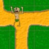

Laberinto 2D
Descripción|  |
Dado un laberinto bidimensional de 8x8, el objetivo es cruzar el laberinto empezando en una posición de origen y terminando en una posición destino, a ser posible, por el camino más corto. |
El tablero se representa con una matriz de 1's y 0's. Los 1's son pasillos, y los 0's paredes. La posición se guarda como un par X,Y.
- Estado inicial: (0,7), En la posición se encuentra la salida.
- Posición final: (7,7), En esta la llegada.
A partir del estado inicial se crea el espacio de estados, aplicando una serie de operadores que hemos definido, basándonos en el enunciado:
- LEFT "Izquierda"
- RIGHT "Derecha"
- UP "Arriba"
- DOWN "Abajo"
Cada uno de estos operadores se podrá aplicar a un estado siempre y cuando éste cumpla su precondición:
- Ejemplo: LEFT, este operador sólo se podrá utilizar cuando no nos encontremos en el borde izquierdo de la matriz que contiene el laberinto.
En cuanto a las estrategias utilizadas para este problema de representación, hemos utilizado estrategias no informadas:
- Búsqueda con Profundización Iterativa (IDS)
- Tiempo de ejecución: Aprox. 180 ms.
- Número de nodos expandidos: 48370
- Solución: En 17 pasos.
- Búsqueda Primero en Anchura (BFS)
- Tiempo de ejecución: Aprox. 1593 ms.
- Número de nodos expandidos: 52725
- Solución: En 17 pasos.
- Búsqueda Primero en Profundidad (DFS)
- No se llega a la solución, debido a que se queda infinitamente ciclando.
- Búsqueda con límite de Profundidad (DLS)
- El límite en profundidad utilizado es 23.
- Tiempo de ejecución: Aprox. 50 ms.
- Número de nodos expandidos: 14173
- Solución: En 23 pasos.
Además de 3 heurísticas, basadas en la distancia de Manhattan, que asocia a cada estado el número mínimo de pasos que le quedan para llegar hasta el objetivo, la hemos denominado:
- Manhattan
- Tiempo de ejecución: Aprox. 120 ms.
- Número de nodos expandidos: 2923
- Solución: En 21 pasos.
- Manhattan Extendida
- Tiempo de ejecución: Aprox. 10 ms.
- Número de nodos expandidos: 1023
- Solución: En 21 pasos.
- Pytagore
- Tiempo de ejecución: Aprox. 2404 ms.
- Número de nodos expandidos: 96824
- Solución: En 21 pasos.
Parece que entre las tres heurísticas implementadas, Manhattan Extendida es la más rápida, además de la que menos nodos expande para encontrar la solución.
Además para este problema, hemos implementado algoritmos de mejora iterativa, como es Escalada, y otro algoritmo de primero el mejor aparte de A*, como es Búsqueda Voraz.